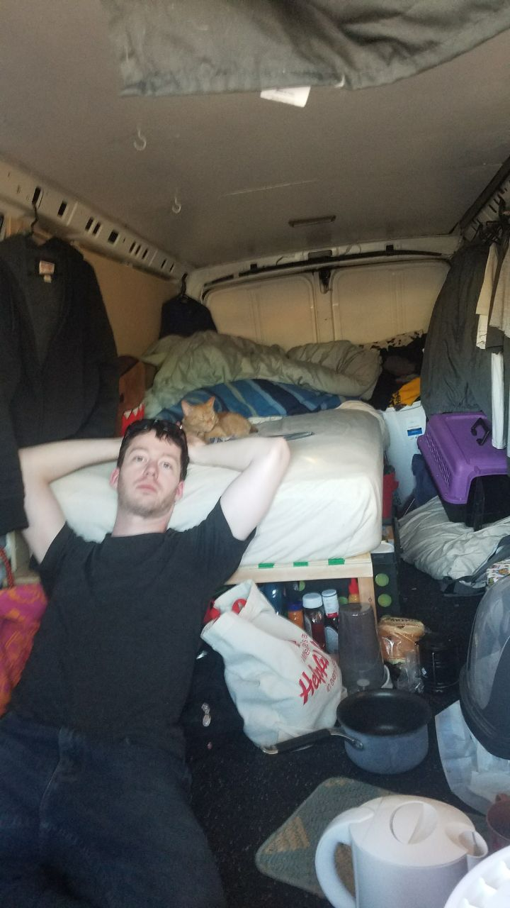
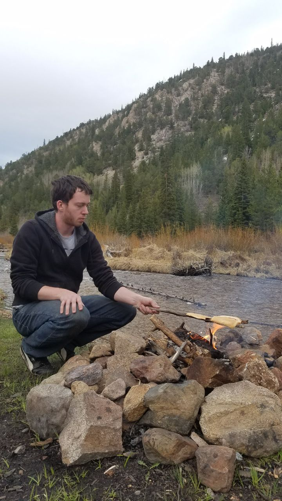
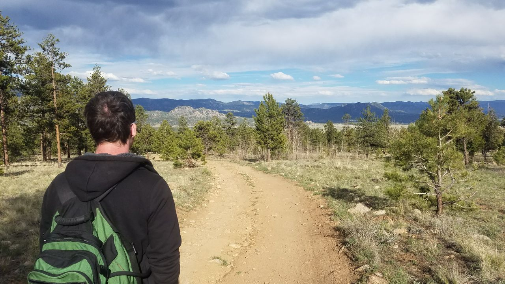
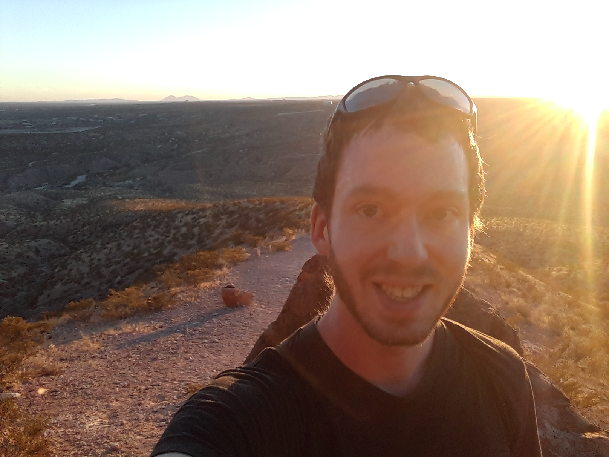
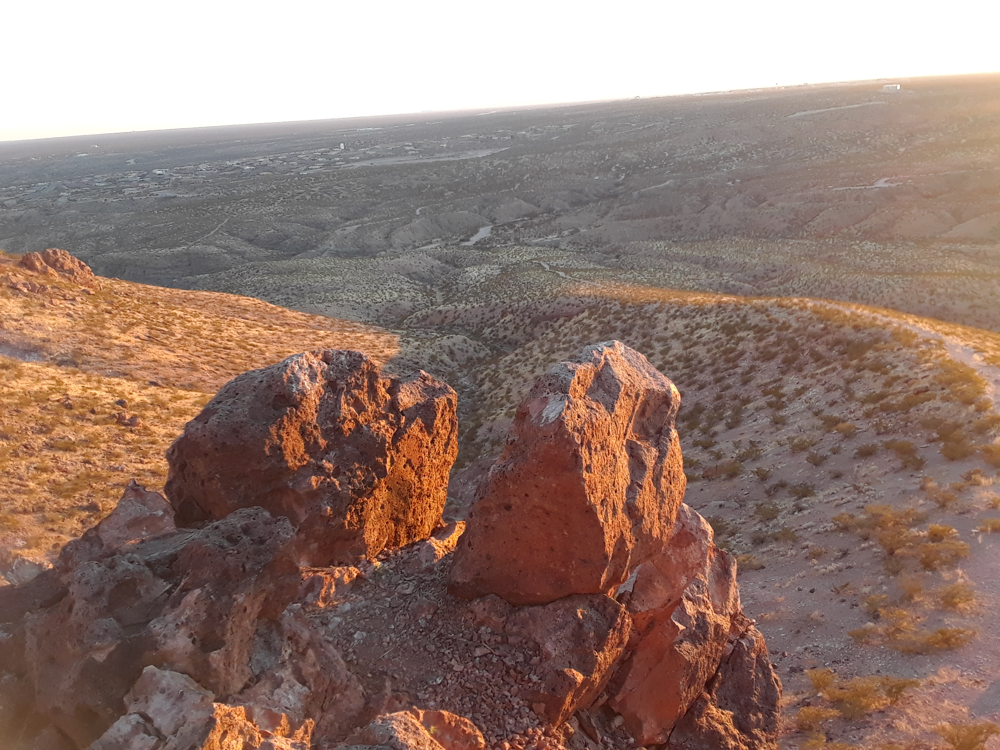

2017 in Review
2017 was an incredibly exciting year for me and one which was full of adventure. Across the board I've grown friendships, memories, skills, and failures. I hope by reading this you can take these memories as goals or stories.
Surgery
Right at the start of 2017 I needed some hernia surgery. The operation was nothing major, but the ordeal took a few days to recover from.
Vanlife
Over the winter of 2016 and early into 2017 I had been following along a few communities on reddit (and other sites, youtube, twitter, etc). One such community was /r/vanlife, which is a community about people rejecting traditional housing and taking control to live in a van/suv/truck they modify. This is similar, but different from a traditional RV lifestyle as these builds are typically done for a fraction of the cost of an RV.
After living in Des Moines, IA for 3 years (in May '17) I was quite bored and frustrated with myself. I knew that moving someplace else was what I needed to do for myself, however I had no idea where to move. As a kid my family was fortunate to have many vacations, but I didn't have much in the way of living experience in those cities/areas.
Around February I recall telling my parents I was "going to live in a van". The conversation was a bit of a shock to my parents, but they didn't have any major qualms after I overly-explained many of the builds, tips and tricks, locations, and working arrangements I had read about.
In March I purchased my 2001 Chevy Express 3500 van and began to build out the sides, bed, shelving, and solar. I've documented the build. Many friends and family members were wise to mention that recording the build would serve as a memory years later.
I had a van. I had a deadline. I had a couple friends to help me build. I had a bunch of tips and ideas from the internet.
I didn't have any clear direction of where I'd go or what this would actually be like. Many of the videos about people's first week/month in a van sound similar. It's comparable to switching cities or jobs, but after a little while you find a groove and everything turns out okay.
Colorado
In 2016 I had taking a good friend, Eileen, and my Saturn Ion to Colorado, Wyoming, Utah for a 10-day car-camping sort of adventure. This trip sparked a fire in me that I love being nomadic, traveling, camping, and finding the unknown. The trip was 3k miles and a blast.
May came around and I said goodbye to my apartment, downtown life, family and friends. I was off with the Eileen back to Colorado. If you've never been Colorado is a must visit at some point. Beautiful mountains, lakes, valleys and towns await you.
At one such lake and campground outside of Buena Vista, CO the entire trip, my new life, almost ended. One night we left out a bit of hummas and crackers while we were camped by a river ... and that was a bad idea.
Sometime overnight I awoke to hear a deep exhale and snort.. This was coming from a bear and the sound was over near Eileen's tent. I froze and laid on my back in silence while I hear the bear walk around her tent a bit and push into it. No sound was coming from Eileen's tent and so I had no idea if she was asleep, injured, or dead.
Several minutes pass (I had no idea how long this entire ordeal actually took) and the bear walks between our tents and faces mine. I can hear him probably 3 feet away from me, but I can't see as my tent cover was on. Looking back I am so glad the bear couldn't see me, because what happened next was a loud violent swipe against my tent. He had swiped the tent and torn a small square hole (about the size of a dollar bill folded in half) in my tent.
I froze. My only thought was "this bear will kill me" and I'm stuck in my sleeping bag inside the tent which has a zipper. I wouldn't be able to fight or run without being attacked. Laying absolutely frozen and barely breathing the bear left after what seemed a lifetime. More time I waited as I only heard the bear walk away, but had no idea how far.
More minutes pass and I don't hear anything from Eileen. I picture her in my head after she's been attacked by the bear and so I realize we have to get together and make sure we're ok. The safest spot is back in the van probably 100 yards away. Unzipping the tent scared me as I didn't want to signal the bear. Getting out of the tent allowed me to barely see as it was pitch dark outside. Only having my flashlight at the time I shine it at Eileen's tent and she's already unzipping (after hearing me). We run to the van and hide inside and wait. That night's sleep barely came.
We awoke in the morning to find her tent fully collapsed. The bear had come back and stomped on her tent!
I learned several things that night.
- Always tie up your food or put it away in your vehicle.
- We probably could have been loud and scared the bear off. Black bears are often afraid of noise.
- Bear mace wouldn't have helped. (You should still have it though.)
Colorado Part 2
The bear attack was impactful, but it didn't deter me from the outdoors or traveling. I still strongly wanted this for myself. There's plenty of Colorado left to see and explore. Going on several more hikes really helped me enjoy the outdoors.

It's important that everyone see the natural world. The formations have our human history and relics within them while also being clues to our future.
Stopping in Leadville, CO was a blast. The town was prospering in the 1800's from mining, but has survived today a bit on tourism and holding a few gems. There's a French cafe turned bar at night which has quite the design and fabulous people.
Back to the Midwest
I couldn't stay away from Iowa for long. I had a couple reasons to come back: a bachelor party and the following wedding! This is a blast and the time was good to let everyone know the bear didn't win.
Along with being in the mid-west was when we met up with StockPot Kitchen. It's a traveling kitchen that serves donated food for free back to the community. They're a large community of the most friendly and helpful people I've met.
Oregon
Oregon. Now my favorite state. I had never been, but quickly enjoyed all of my time there. From the pacific ocean to camping and hikes Oregon is a lovely place. I went on a several hike (recommended: Mt. Scott at Crater Lake)
In Oregon I found a perfect campground near the top of a mountain. It's located near TODO in the ___ forest. You should visit there and find it, but I'll tell you to make sure your vehicle can go pretty far off road.
For the eclipse we were west of Madras, OR in the Madras forest. That was beautiful as the totality darkened around us and cooled down the air.
Northern Midwest
After all that fun out west I headed back to the mid-west to see some family and friends. First though I wanted to head far north because I remembered my fourth grade teacher (Mr. Norby) talked about the thick forests past a certain point. Little did I know about the huge Superior National Forest and it's great trails and campgrounds.
While in Duluth I helped out the local off-road trail building crew and saw another shipping yard. (Blurry photo...) After Duluth I went across into Michigan and mostly the Upper Peninsula, which has some historic lighthouses and more piers. Great stuff.
My last time in Wisconsin was a sad time. Kenneth Shannon - my grandfather died in November. He was a great man and loved by his friends and family.
Kentucky
It's fun to venture into new states and discover what's there. In fact sometimes I do that to well.. Well enough that I stumble into a Washington Monument?? In the middle of Kentucky?? How? Oh. This turns out to be the Jefferson Davis Monument. (If you're not aware he's the only President of the Confederate States.) You can pay $5 to see this town from a couple hundred feet up high.
Shawnee is fantastic Kentucky National forest and you should visit. There's an old iron furnace from the civil war and the Little Grand Canyon hike where you climb down into a canyon!
Southwest
Caving. It's great fun if you don't mind getting dirty. In Kentucky I'd recommend visiting Mammoth Cave, which is the largest continuous cave in the world. You can go on a tour and look down hundreds of feet to pools of water and formations millions of years old. Also, in Iowa visit the Maquoketa Caves state park. You can climb around in some of them!
Part of my time in the south/southwest was for KubeCon/CloudNativeCon as a work conference. That was great for us to all meet in person as a team and as a conference on the new projects we're using at work.
In New Mexico during the 1200's a group of Mogollons settled down for a bit in some caves. Inside these caves they built what's known now as Gila Cliff Dwellings and you can see how they lived for a few short years. No one is quite sure why they left, but the dwellings weren't like anything I had seen before. Thinking about how only a few hundred years separated my life from theirs was a trip.
While in New Mexico I had to visit Roswell. In case you didn't know it's indeed not full of aliens, sadly... There is a nice movie theater though.
 
Finishing out my time in New Mexico I visited the White Sands National Monument, which I highly recommend. If you can I'd recommend going on the 5 mile loop hike out of the north. Walking among the dunes for a few hours gets you away from the noise and tourists. My last stop as the VLA observatory, which if you're a computer nerd like me was a blast. Trying to understand how all those computers collect, parse, transfer, and store all the 27 satellite's data at this one site is a bit mind blowing. (Let alone mixed with the other sites across the globe)
Other notable events
The more you travel the more you need to expect to get stuck. Either in airports, cities or in the mud. Over 2017 I got stuck many many times in the mud. (All my own fault) One time in Texas was during a freak rainstorm and so after slowly crawling through the mud I pull over into a field. BAD Idea! I couldn't see how muddy the field was and promptly got stuck. A few cars passed and then a truck pulled over to help. After strapping my tow strap to our vehicles he guns it to yank me free. Let's just say that doesn't work and he almost gets stuck himself. To help out I get behind and push his truck free, which works, at the cost of getting covered head to toe in mud and soaked in the rain. At a nearby gas station (which was flooding) they joked about "having fun mudding". Hah!
Getting stuck is fun though. I can remember getting myself stuck in Idaho, Minnesota, Texas (again), and almost in Colorado. Carry a tow strap.
People don't get much (read: any) physical mail anymore. The days of sending a physical letter you write seem forgotten. To me that's a bit sad as there's something about physically capturing a memory or story. I've started sending postcards to people with written notes on them and hopefully people hang them on their fridge.
Here's some of my favorite articles I read in 2017. Enjoy!
- 5 Reasons It’s Okay to Give Money to Homeless People by Holly Johnson
- "Here's What I'm Telling US Congress about Data Breaches" by Troy Hunt
- "How traffic actually works" by Jason Liszka
- "Chop wood, carry water" by Courtney Nash
- Emergency Preparedness Checklist: Prepping for Beginners
- "the depression thing" by Zach Holman
- "How I made sure all 12 of my kids could pay for college themselves" by Francis Thompson
All in all 2017 was a great, fantastic, and thrilling year. I grew as a person with experiences, challenges, loss, and capital. There are likely other stories from the year which I haven't added here yet, but I'd be happy to tell them. Here's a short list:
- Eating Spam
- Sleeping in a Yurt
- Cows in a national forest
- Putting out a root fire